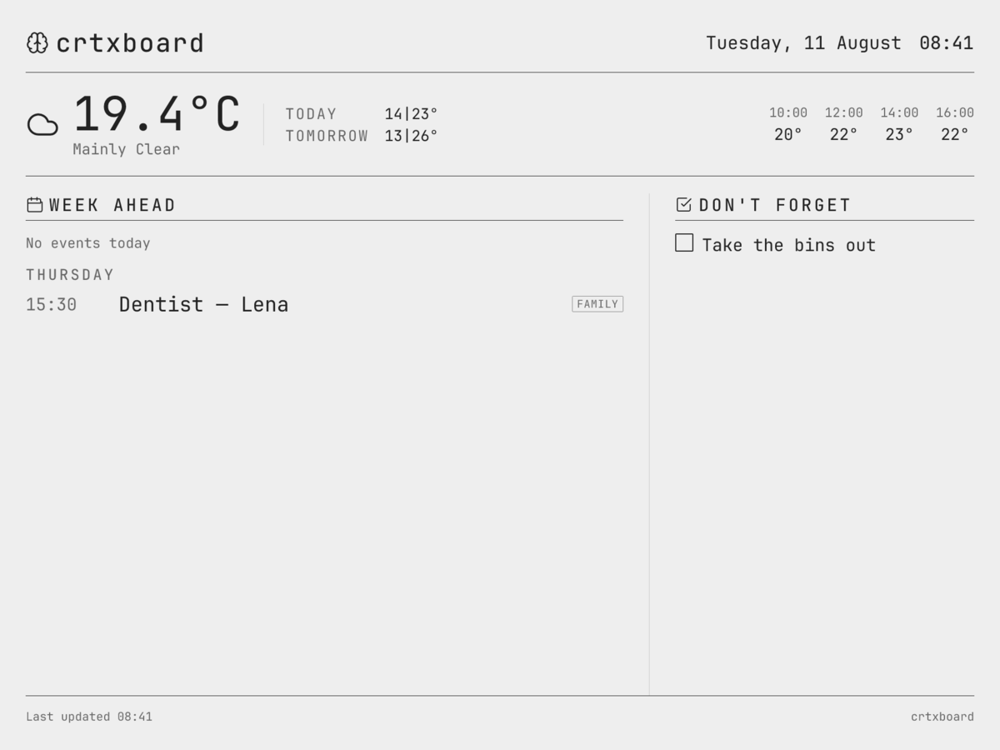

Voice message
day after tomorrow dentist for Lena at half three and don't forget to take the bins out
Sent as a voice message, transcribed and structured on your own machine, then rendered to the panel on the wall.
Which would you rather?
No email, no account, nothing opens. The split between these two answers is the only thing this page is measuring.
Answered. That is the whole measurement. If you have thirty more seconds, the question below is worth more than the click.
How do you handle this today?
The most useful answer this page can get is "I don't, I just forget." The second most useful is the shell script, the whiteboard or the shared note you already built. Both tell me more than any click does.
Got it. That is worth more than the click above.
The wall is one of two screens.
The board is the day at a glance. Before any of it, first thing in the morning, a short briefing arrives in your inbox as an email. That one has an opinion.
- TOP 3 TODAY
- What it decided actually matters today, out of everything you have said to it.
- STUCK ON
- What you have brought up more than once and never closed.
- SMALL WIN
- One thing that did get done, so the briefing is not only a list of debt.
Deciding what counts and noticing what has been sitting there is the part a list cannot do. It is also the part whose accuracy is not measured, which is dealt with further down. The briefing goes out over SMTP, so running it yourself means giving it a mail server to send through.
It runs on a screen you already have.
The board is a PNG, fetched over HTTP on a timer. Anything that can hold a full-screen image can be the wall, and the first three cost nothing.
The phone in your pocket
Open the board's address in the browser that is already on it. Free, working inside a minute, and it settles the only question that matters first: do you actually look at it?
An old tablet
The one in the drawer. Full-screen browser, reload on a timer, propped on a shelf or stuck to the fridge door.
A browser tab on the box that is already running
If the machine serving the board has a monitor attached, that monitor is a wall. Nothing further to buy, nothing further to configure.
Or the version this was built for.
Every option above works. E-Ink is the one the rendering was designed around: no backlight glowing in a kitchen at night, no microphone anywhere in the room, and the last board stays on the glass with the power off. The best surface, not the requirement.
A TRMNL, from about €120
Pointed at your server instead of theirs. No TRMNL account anywhere in the path.
Any bare E-Ink panel
Over the open BYOS protocol. If you already own a panel, it can fetch the board without buying into anybody's product.
Three ways to run it.
The software is identical in all three. What changes is who does the work, who is liable, and who notices when it breaks.
-
All on your machine
One compose file brings up Postgres, the transcription, the language model and the app. This is the mode that wants a real box: a NUC, an old desktop, roughly 8 GB of RAM free. The embedding model alone is 4.7 GB on disk, which is what sets that floor. A Raspberry Pi will run the application quite happily. It will not run the transcription.
-
Your machine, the heavy parts on APIs you pick
The same install, with transcription and the language model pointed at a provider you choose, on your key and your account. Your contract, not mine. Nothing heavy runs at home, so this one fits on a Pi.
-
My machine
No install, no server, no updates, no model downloads, no compose file to keep an eye on. Tap an invite link and send the bot a message.
What the third mode sells is not hosting. It is this: I transcribe, I sort, and I notice when it breaks.
You run itmodes one and two
- You get
- Nothing of yours reaches me at all. Not the audio, not the text, not the board.
- You give
- A box, electricity, and attention.
The strongest argument for this column is legal rather than technical. One person running a box for their own household sits inside the GDPR household exemption, Article 2(2)(c). Nobody is anybody's data controller, there is no processing agreement to sign, and there is no processor to sign it with.
"So I need an API subscription as well?"
Worth doing the arithmetic before assuming so. Call it thirty messages a day, about seven hundred tokens in and a hundred and fifty out for each one. That comes to roughly three quarters of a million tokens a month, which at what small models cost lands somewhere between €0.03 and €0.05 a month for the entire household. In mode one it is zero, because the model is sitting on your own disk.
I run itmode three
- You get
- It runs without you.
- You give
- Money.
And the honest argument for this column, which is a criticism of the other one: a self-hosted setup fails silently. The bot stops, the panel shows Tuesday for three days, and you never notice, because this is precisely the thing you never open. Run by me, somebody notices.
"Notices how, exactly?"
Two heartbeats are watched: the last message the bot successfully handled, and the last time your panel actually collected a board. If either one goes quiet for longer than an hour, the alarm goes to me. You find out because it has already been fixed, not because the wall went stale and you eventually looked up.
Same code either way. No feature is gated, there is no licence check, and there is no code path that behaves differently depending on who is running it. These are two doors for two kinds of people, not two tiers.
What actually leaves your house.
Your voice message reaches Telegram's servers before anything local has touched it. That is true in all three modes, so "nothing leaves your house" is a sentence you will not find on this page. Here is the real list instead.
| What | All on your machine | Your machine, your APIs | My machine |
|---|---|---|---|
| The audio of your voice message | Telegram, then your own box. It goes no further. | Telegram, then the transcription provider you chose. | Telegram, then my box. I do the transcribing. |
| The text of what you said | Stays on your box. | Goes to the language-model provider you chose. | Comes to my box. |
| The board image | Rendered on your box, fetched by your panel. | Rendered on your box, fetched by your panel. | Rendered on my box, fetched by your panel over the internet. |
| Your coordinates, for the weather strip | open-meteo, on every render. | open-meteo, on every render. | open-meteo, on every render. |
| Calendar events | Google, if you connect a calendar. Nothing if you do not. | Google, if you connect a calendar. Nothing if you do not. | Google, if you connect a calendar. Nothing if you do not. |
| The morning briefing | Out by SMTP, through whichever mail server you configured. | Out by SMTP, through whichever mail server you configured. | Out by SMTP, through mine. |
Local transcription is still worth having, and it is worth exactly this much: the audio is not handed to a second company on top of the first, and the text only travels to somewhere you pointed it. That is a smaller claim than the one usually made in this category, and it is the one that survives reading the source.
And when I am the one running it
- Encrypted in transit, and encrypted at rest on the disk.
- Your entries train nothing. They are not sold, not shared, and not brokered to anybody.
- The subprocessors are named, and this is the complete list: Telegram for the message itself, open-meteo for the forecast, Hetzner for the machine it all runs on, and Google Calendar only if you connect one.
- The audio is discarded once it has been transcribed. The transcript is the thing that is kept.
- Delete your household and it goes out of the database and out of the backups.
Honest status.
Echo Show has done voice at the wall for years, at €329. This is not new ground and I am not going to pretend it is. The difference is narrow, and worth stating exactly: free-form spoken thought instead of list commands, real structuring behind it, running on hardware you get to choose, printed to E-Ink.
| Capability | crtxboard | Echo Show | Wall tabletsDæly, Hearth, Skylight | TRMNL | hass-einkdashboard |
|---|---|---|---|---|---|
| Voice input at the wall | yes | yes | no | no | no |
| Free-form spoken thought, not list commands | yes | no | no | no | no |
| Turns what you said into entries by itself | yes | no | no | no | no |
| Processing on a machine you control | yes | no | no | yes | yes |
| E-Ink, not a backlit tablet | yes | no | no | yes | yes |
| Takes what you say at the wall itself | no | yes | yes | no | no |
Those readings are mine, from the public documentation of each. If a cell is wrong, the repository has an issue tracker and I would rather fix the table than defend it.
What it does
- Takes a Telegram message, typed or spoken
- Transcribes the voice message, locally or on a provider you name
- Sorts what you said into dated entries and reminders
- Renders the board and serves it over BYOS
- Writes the morning briefing and emails it to you
What it does not do
- It does not listen in the room. There is no microphone. You send it a message, the same as you would send a person one
- The panel is output only. Nothing on the wall can be ticked off, tapped or corrected
- It will not flag its own mistakes. When it files something wrongly, the board shows it wrongly until you say otherwise
- It does not read your mail, your files or your calendar history. It knows what you sent it, and nothing else
- One household per install. It is not a workspace and there are no shared teams in it
Deliberately absent
- No app to install. Telegram is the input, and you already have it or you do not want this
- No notifications through the day. Two moments only: the email in the morning, and whenever you happen to glance at the wall
- No streaks, no scores, no chasing you about the thing you did not do
- No accuracy figure, for the reason directly below
Accuracy of the structuring step is not measured, and structurally cannot be.
Not "about ninety percent". Not measured at all. There is no test set and no agreed ground truth for what the right entry, or the right date, even is. "Half three the day after tomorrow" has a correct answer and can be scored. "Sort out the thing with the car" does not have one, and the moment you write down what the correct output should have been, you have invented the answer rather than measured it. That is not a gap in the testing. It is the shape of the problem.
So no accuracy number appears on this page, and none will until there is a benchmark I would be willing to have picked apart in public by people who clone the repository before they upvote anything.
Which leaves the part that matters more: what happens when it gets one wrong. It files the entry under the wrong heading, or on the wrong day, and the board shows it that way until you correct it. Correcting it is another message to the same bot. Nothing is deleted quietly behind your back and nothing on the board ticks itself off, so a wrong entry stays visible and fixable rather than silently disappearing. If it puts the dentist on a Thursday that should have been a Friday, you will see it before I do. That is the honest shape of it, and it is exactly why the question at the top of this page is worth answering.
For anyone who wants to check.
- Input
- A Telegram bot. Text or voice message, nothing else to install on your phone. The message reaches Telegram's servers before it reaches anything of yours or mine.
- Transcription
- On your own machine by default, or through a provider you name, on your key.
- Structuring
- A language model turns the message into entries. Local or through a provider, same as above.
- Local model footprint
- The embedding model is about 4.7 GB on disk at 4096 dimensions, which is what puts the floor for running everything at home at roughly 8 GB of free RAM.
- Wall output
- A PNG rendered server side with Satori and resvg, in greyscale, at whatever size the panel asks for.
- Delivery
- The open BYOS protocol. The panel fetches an image on a timer. No vendor account anywhere in the path.
- Weather
- open-meteo, called on every render, in every mode. It is the one outbound call the board makes on its own.
- Second output
- The morning briefing, written by the same model and sent by SMTP email. Running it yourself means giving it a mail server to send through.
- Also in the repository
- An MCP server, so other tools can read and write the same entries.
- Licence
- AGPL-3.0

Both entries came out of the one voice message at the top of this page. The date resolved to Thursday, the time to 15:30, and the bins landed under a different heading because they are not an appointment.
The box next to the bins is empty on purpose. It arrived. It is not done. Nothing on this board ticks itself off, and nothing arrives already ticked.
About €7 a month, per household.
Monthly, cancel whenever you like. One price for the whole household rather than per person, because that is how the thing is built and how the household exemption is written.